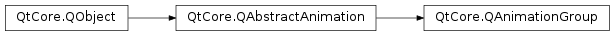

QAnimationGroup¶
Inherited by: QSequentialAnimationGroup, QParallelAnimationGroup
Note
This class was introduced in Qt 4.6.
Synopsis¶
Functions¶
- def
addAnimation(animation) - def
animationAt(index) - def
animationCount() - def
clear() - def
indexOfAnimation(animation) - def
insertAnimation(index, animation) - def
removeAnimation(animation) - def
takeAnimation(index)
Detailed Description¶
The
PySide2.QtCore.QAnimationGroupclass is an abstract base class for groups of animations.An animation group is a container for animations (subclasses of
PySide2.QtCore.QAbstractAnimation). A group is usually responsible for managing thestateof its animations, i.e., it decides when to start, stop, resume, and pause them. Currently, Qt provides two such groups:PySide2.QtCore.QParallelAnimationGroupandPySide2.QtCore.QSequentialAnimationGroup. Look up their class descriptions for details.Since
PySide2.QtCore.QAnimationGroupinherits fromPySide2.QtCore.QAbstractAnimation, you can combine groups, and easily construct complex animation graphs. You can queryPySide2.QtCore.QAbstractAnimationfor the group it belongs to (using thePySide2.QtCore.QAbstractAnimation.group()function).To start a top-level animation group, you simply use the
PySide2.QtCore.QAbstractAnimation.start()function fromPySide2.QtCore.QAbstractAnimation. By a top-level animation group, we think of a group that itself is not contained within another group. Starting sub groups directly is not supported, and may lead to unexpected behavior.
PySide2.QtCore.QAnimationGroupprovides methods for adding and retrieving animations. Besides that, you can remove animations by callingPySide2.QtCore.QAnimationGroup.removeAnimation(), and clear the animation group by callingPySide2.QtCore.QAnimationGroup.clear(). You may keep track of changes in the group’s animations by listening toQEvent.ChildAddedandQEvent.ChildRemovedevents.
PySide2.QtCore.QAnimationGrouptakes ownership of the animations it manages, and ensures that they are deleted when the animation group is deleted.
-
class
PySide2.QtCore.QAnimationGroup([parent=nullptr])¶ Parameters: parent – PySide2.QtCore.QObjectConstructs a
PySide2.QtCore.QAnimationGroup.parentis passed toPySide2.QtCore.QObject‘s constructor.
-
PySide2.QtCore.QAnimationGroup.addAnimation(animation)¶ Parameters: animation – PySide2.QtCore.QAbstractAnimationAdds
animationto this group. This will callPySide2.QtCore.QAnimationGroup.insertAnimation()with index equals toPySide2.QtCore.QAnimationGroup.animationCount().Note
The group takes ownership of the animation.
-
PySide2.QtCore.QAnimationGroup.animationAt(index)¶ Parameters: index – PySide2.QtCore.intReturn type: PySide2.QtCore.QAbstractAnimationReturns a pointer to the animation at
indexin this group. This function is useful when you need access to a particular animation.indexis between 0 andPySide2.QtCore.QAnimationGroup.animationCount()- 1.
-
PySide2.QtCore.QAnimationGroup.animationCount()¶ Return type: PySide2.QtCore.intReturns the number of animations managed by this group.
-
PySide2.QtCore.QAnimationGroup.clear()¶ Removes and deletes all animations in this animation group, and resets the current time to 0.
-
PySide2.QtCore.QAnimationGroup.indexOfAnimation(animation)¶ Parameters: animation – PySide2.QtCore.QAbstractAnimationReturn type: PySide2.QtCore.intReturns the index of
animation. The returned index can be passed to the other functions that take an index as an argument.
-
PySide2.QtCore.QAnimationGroup.insertAnimation(index, animation)¶ Parameters: - index –
PySide2.QtCore.int - animation –
PySide2.QtCore.QAbstractAnimation
Inserts
animationinto this animation group atindex. Ifindexis 0 the animation is inserted at the beginning. IfindexisPySide2.QtCore.QAnimationGroup.animationCount(), the animation is inserted at the end.Note
The group takes ownership of the animation.
- index –
-
PySide2.QtCore.QAnimationGroup.removeAnimation(animation)¶ Parameters: animation – PySide2.QtCore.QAbstractAnimationRemoves
animationfrom this group. The ownership ofanimationis transferred to the caller.
-
PySide2.QtCore.QAnimationGroup.takeAnimation(index)¶ Parameters: index – PySide2.QtCore.intReturn type: PySide2.QtCore.QAbstractAnimationReturns the animation at
indexand removes it from the animation group.Note
The ownership of the animation is transferred to the caller.
© 2018 The Qt Company Ltd. Documentation contributions included herein are the copyrights of their respective owners. The documentation provided herein is licensed under the terms of the GNU Free Documentation License version 1.3 as published by the Free Software Foundation. Qt and respective logos are trademarks of The Qt Company Ltd. in Finland and/or other countries worldwide. All other trademarks are property of their respective owners.